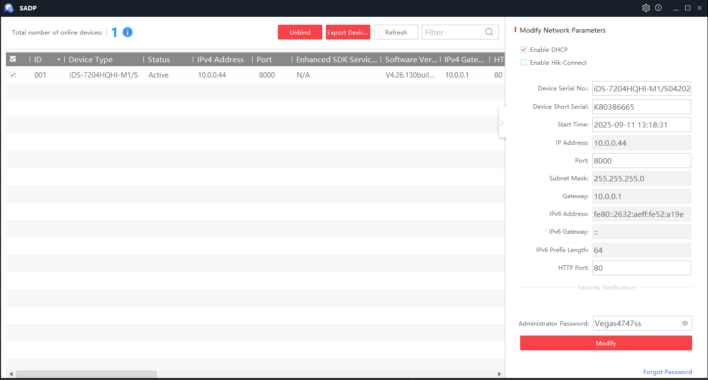
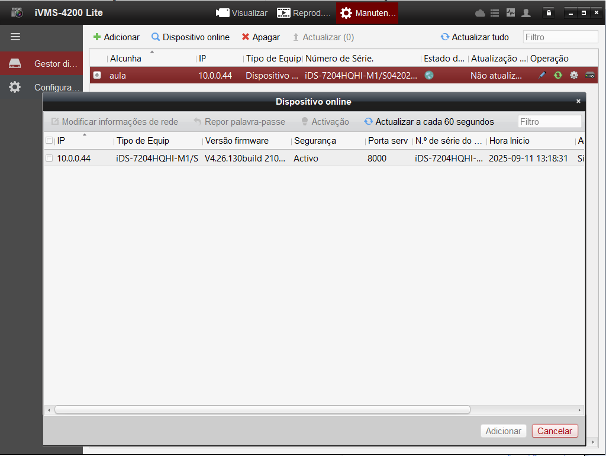

1) Padrão de cores do cabo UTP
| Par / Cor |
Função |
Observação |
| Par Laranja |
Positivo (+) |
Alimentação |
| Par Marrom |
Negativo (–) |
Alimentação (retorno) |
| Azul |
Sinal de vídeo |
Primeira câmera |
| Branco/Azul |
Comum |
Primeira câmera |
| Verde |
Sinal de vídeo |
Segunda câmera (ou única) |
| Branco/Verde |
Comum |
Segunda câmera |
Dica: Se houver apenas uma câmera, utilize o par Verde (sinal + comum) e deixe o par Azul como reserva.
2) Ligação do Vídeo Balun
O balun adapta o sinal da câmera para o cabo UTP. Conexão típica:
Azul → Video +Branco/Azul → Video –Verde → Video + (segunda câmera)Branco/Verde → Video – (segunda câmera)
✔ Sempre mantenha os pares originais juntos.
⚠ Evite passar o cabo UTP paralelo a cabos de energia.
3) Ligação do P4 (alimentação)
Conector coaxial para 12Vcc:
- Pino central: Positivo (+) → Par Laranja
- Externo: Negativo (–) → Par Marrom
Reforço: usar também Branco/Laranja (+) e Branco/Marrom (–).
4) Cenários
Instalação com uma câmera
- Vídeo: Verde (+) e Branco/Verde (–)
- Alimentação: Laranja (+) e Marrom (–)
Instalação com duas câmeras
- Câmera 1: Azul (+) / Branco Azul (–)
- Câmera 2: Verde (+) / Branco Verde (–)
- Alimentação: Laranja (+) / Marrom (–)
5) Checklist rápido
- Polaridade confirmada no P4?
- Pares corretos mantidos juntos?
- Video + e Video – nos bornes certos do balun?
- Fonte com corrente suficiente para as câmeras?
SADP
Quando precisamos ver e configurar os dispositivos da rede onde estamos usamos o programa SADP que é baixado do site

IVMS 4200 LITE
O programa que usamos para gerenciar o dvr e vizualizar as cameras é o IVMS 4200 LITE que baixamos no site
